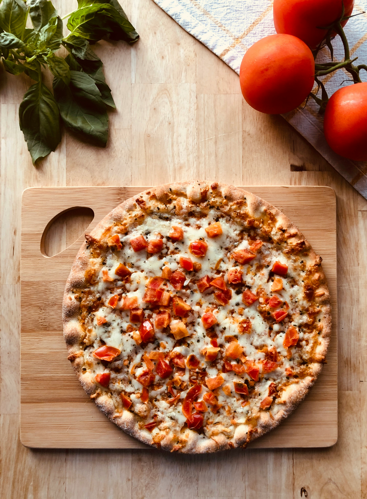

Pizza

Description:
A flat, round base of dough topped with tomato sauce, cheese, and various toppings, baked until crispy and delicious.
Ingredients
- 2 cups all-purpose flour
- 1 packet (2 1/4 tsp) active dry yeast
- 1 tsp sugar
- 3/4 cup warm water
- 1 tsp salt
- 1 cup tomato sauce
- 2 cups shredded mozzarella cheese
- Your choice of toppings (pepperoni, vegetables, etc.)
Steps
- Preheat the oven to 475°F (245°C).
- In a bowl, mix warm water, sugar, and yeast. Let it sit for 5 minutes until frothy.
- Add flour and salt, knead until smooth, then let it rise for 30 minutes.
- Roll out the dough on a floured surface and place it on a pizza stone or baking sheet.
- Spread tomato sauce over the dough, sprinkle with cheese, and add your desired toppings.
- Bake for 12-15 minutes or until the crust is golden and the cheese is bubbly.
- Slice and serve hot.
Home